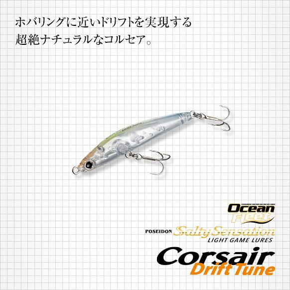
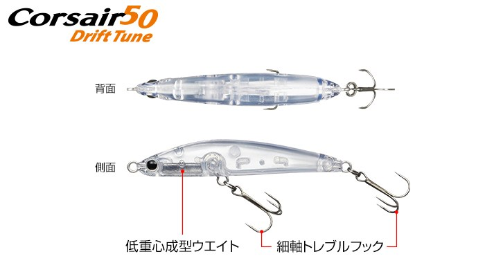
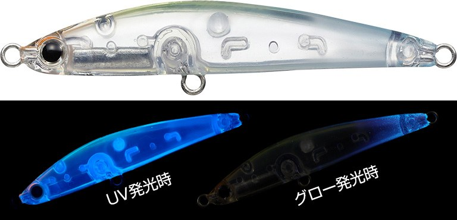
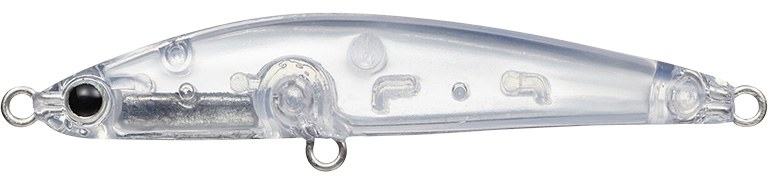
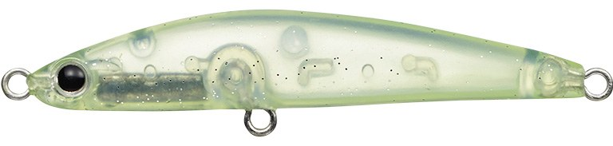
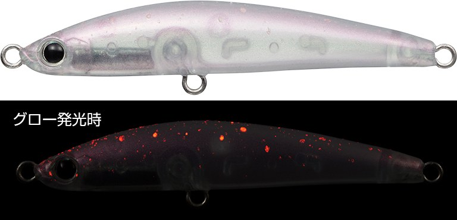
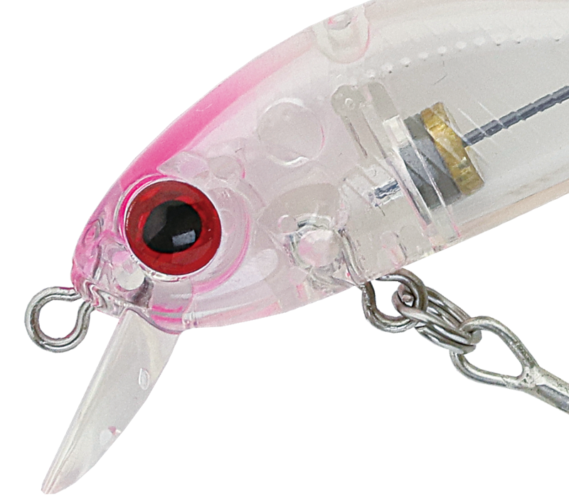

コルセア ドリフトチューン
コルセア ドリフトチューンは、エバーグリーンのライトゲーム用プラグ「コルセア」を、潮に乗せて漂わせる釣りのためにチューンしたモデルです。
アミや稚魚、稚ガニ、ホタルイカなど、潮に乗って漂う小さな生き物を食べているメバル・アジに合わせて、水面下10〜40cmをホバリングに近いナチュラルなドリフトで攻められるのが最大の特徴。50・65・85の3サイズがあります。

画像出典:エバーグリーン公式HP
スペック
- メーカー
- EVERGREEN（エバーグリーン）
- タイプ
- エクストラスローシンキング
- サイズ
- 50（5.0cm・2.0g）／65（6.5cm・4.5g）／85（8.5cm・9.5g）
- レンジ
- 水面下10〜40cm
- ターゲット
- メバル・アジなど
- 価格
- 1,250〜1,700円（税別）
▼今すぐチェック

コルセア ドリフトチューンの特徴
漂う小さな生き物を食べる、セレクティブなターゲットに
-
ほぼ水平でわずかに頭下がりの姿勢
水絡みがよく、波や風の中でもレンジをキープしやすい姿勢。漂うベイトに近い見せ方ができる。
-
基本はI字のスイム
泳ぎは基本的にI字。流れの変化で少しゆらめいて、バイトのきっかけを作る。
-
低重心の成型ウエイト
低重心の成型ウエイトで姿勢を安定させている（50は鉛より比重の軽い合金を使用）。65・85は中軸のトレブルフックで、大型のメバルやクロダイ・シーバスにも対応しやすい。
コルセア ドリフトチューンの使い方
基本は、潮の流れに乗せて、ラインを張りすぎずにゆっくり漂わせる（ドリフトさせる）使い方です。巻くのは、ラインのたるみを取る程度のゆっくりしたスピードで十分です。
潮上に投げて、潮目や明暗の境目を流していくと、漂うアミや稚魚を待っているメバル・アジに自然に見せられます。

画像出典:エバーグリーン公式HP
コルセア ドリフトチューンの得意な状況
常夜灯まわりや潮の効いた堤防で、メバルやアジがアミ・稚魚などの漂う生き物を食べている時に出番です。
ワームや普通のプラグに反応しない、偏食したセレクティブなメバルにも口を使わせやすいのが強み。漂わせるだけでよく釣れる場面があります。
ワンポイント
アタリが出るのは、漂わせている途中で流れが変わった瞬間が多いです。潮目やヨレに差しかかったら、巻くのを完全に止めて流れに任せると、ゆらめきが出てバイトにつながりやすくなります。
コルセア ドリフトチューンの使い分け
| サイズ | 全長／ |
フック | こんな |
|---|---|---|---|
| 50 | 5.0cm／ |
#14 |
アミや |
| 65 | 6.5cm／ |
#12 |
基準の |
| 85 | 8.5cm／ |
#8 |
ホタルイカや |
スペックはエバーグリーン公式HPの記載より。通常のコルセア（50・65・85）より軽く、ゆっくり沈む設定です。
人気カラー
コルセア ドリフトチューンの人気カラーを紹介します。

プランクトンSPグローとUVで、夜のプランクトンパターンに。

クリア澄み潮や常夜灯の明るい場所で、ナチュラルに見せたい時に。

瀬戸内クリアマットチャートマットチャートで、少し濁った時にもシルエットを出せる。

セクシーピンク・RGグローのピンク。暗い場所や濁りでアピールしたい時に。
※クリア系を主体にしたカラー展開。85には、ホタルイカを再現したカラーなどもあります。
画像出典:エバーグリーン公式HP
▼今すぐチェック
コルセア ドリフトチューンに似ているルアー
-
 ビートイート63S
バスデイ
詳細はこちら＞
ビートイート63S
バスデイ
詳細はこちら＞
メバル用のミノー。巻いてしっかり泳がせたい時に。
-

リッジ35SS ジップベイツ 詳細はこちら＞35mmのマイクロミノー。もっと小さいシルエットで。
-
 ミニゾー45
ブルーブルー
詳細はこちら＞
ミニゾー45
ブルーブルー
詳細はこちら＞
水面で食わせたい時のトップウォーター。